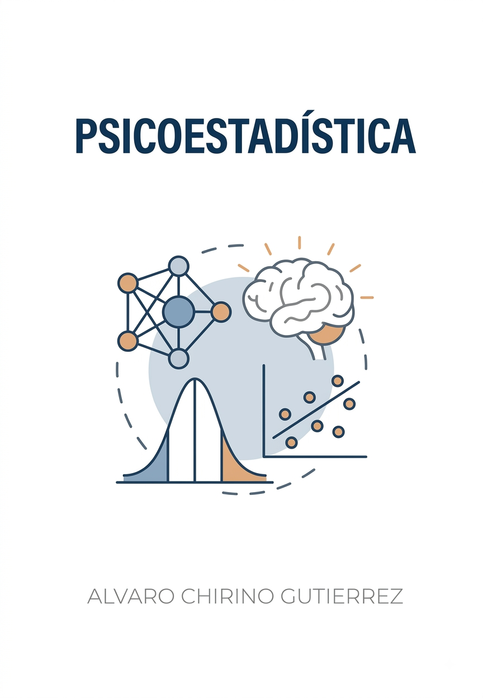

Psicoestadística
Apuntes para la carrera de Psicología
Prefacio

Este libro nace con un propósito claro: desmitificar el análisis de datos en psicología y ciencias del comportamiento. No encontrarás aquí rodeos teóricos innecesarios ni demostraciones matemáticas complejas que alejen al lector del objetivo principal, que es aprender a extraer respuestas válidas a partir de los datos.
La obra está estructurada para acompañar el flujo natural de una investigación cuantitativa, dividiéndose en cuatro grandes pilares:
- Fundamentos: Las bases del razonamiento cuantitativo, la medición en psicología y la preparación estructurada de los datos.
- Estadística Descriptiva: Las técnicas esenciales para resumir, visualizar y comprender la anatomía de un conjunto de datos antes de formular hipótesis.
- Estadística Teórica: Los principios de probabilidad e inferencia estadística que sustentan la toma de decisiones metodológicas.
- Herramientas Estadísticas: La aplicación directa de pruebas analíticas para contrastar hipótesis empíricas en distintos escenarios de investigación.
Para garantizar que la teoría se transforme inmediatamente en práctica, este texto adopta JASP como herramienta central de análisis. Su naturaleza de código abierto, rigor estadístico y diseño intuitivo lo convierten en el entorno de software ideal para que estudiantes e investigadores se concentren en interpretar los resultados (el insight).
El análisis cuantitativo no es un fin en sí mismo, sino la herramienta más robusta que tenemos para comprender el comportamiento humano.
Manos a la obra.
Alvaro Chirino Gutierrez
Audiencia
Este libro está destinado a la materia de Psicoestadística de la carrera de Psicología de la Universidad Católica Boliviana, sede La Paz.
Estructura del libro
- Parte I: Diseño estadístico y estadística descriptiva
- Diseño estadístico
- Estadística descriptiva
- Parte II: Estadística teórica e inferencial
- Estadística teórica
- Herramientas estadísticas
Cada capítulo incluye actividades para el aula (recuadros de nota) y tips de JASP (recuadros de sugerencia) que conectan la teoría con la práctica.
Licencia

Este documento de Alvaro Chirino está bajo una licencia Creative Commons Atribución-NoComercial-CompartirIgual 4.0 Internacional.